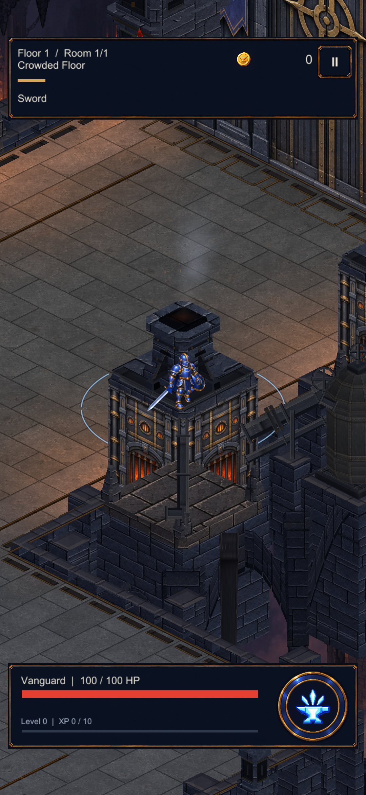
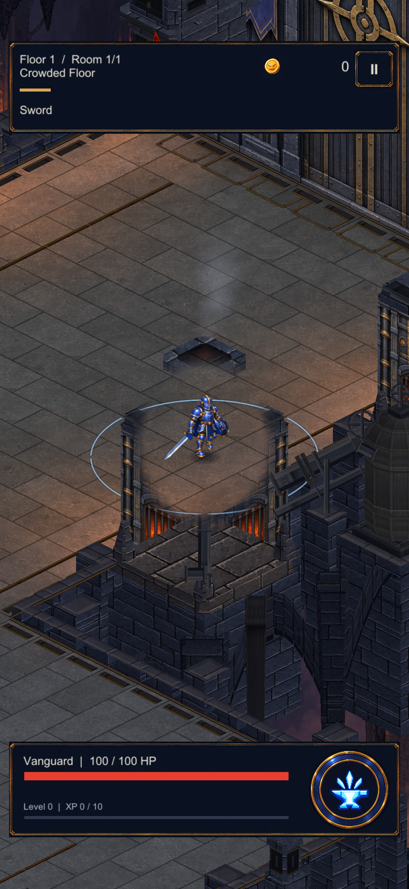
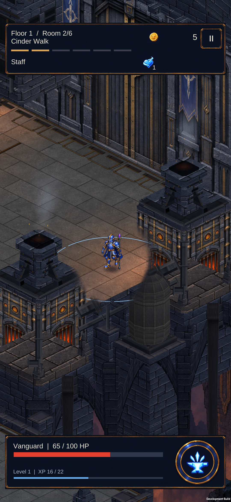
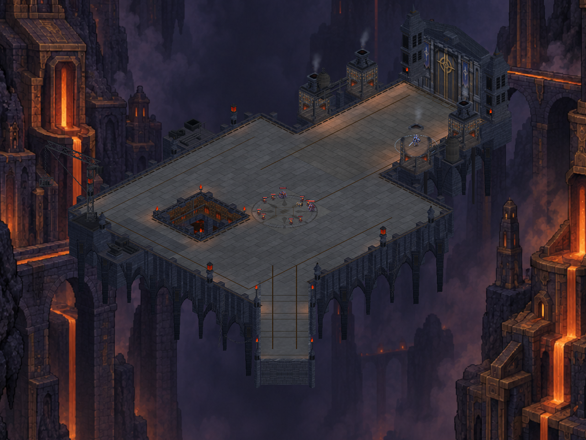

Fırın arkasında zemini görmek
Aynı konum ve kameradan gerçek Unity görüntüleri. Kahramanın çevresindeki yapı parçaları yumuşakça saydamlaşır; yürüyüş alanı ve karakter görünür kalır. Yetenek halkası, Staff alan darbesi ve yetenek patlaması zeminde çizilir.
Açıklık kapalı
Açıklık açık
Bu karşılaştırmada iki görüntüde de yeni zemin halkası sırası kullanılıyor. Açıklık karakter merkezli bir okunabilirlik uygulaması; bütün düşmanlar için fiziksel derinlik sıralaması değildir.
Telefonda kontrol edildi
S23 cihazinda yeni paket:

Harita

17 statik çizim grubu · 59.584 tepe noktası · yürüyüş sınırları aynı. Doğrulama kaydı